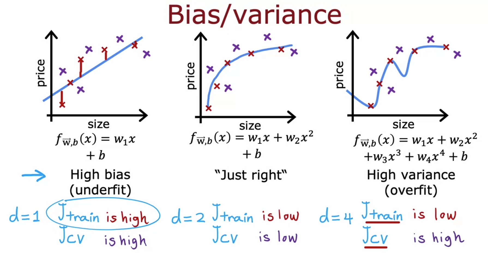
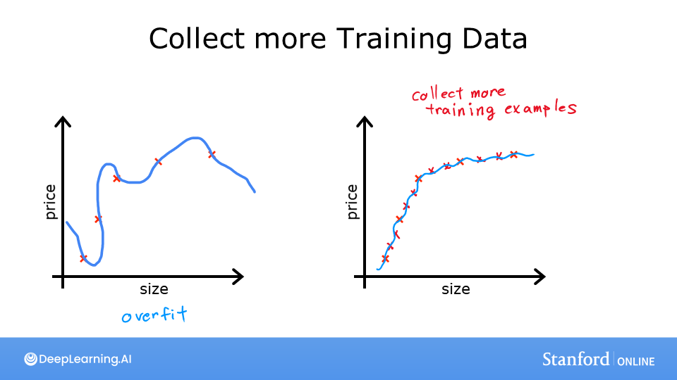
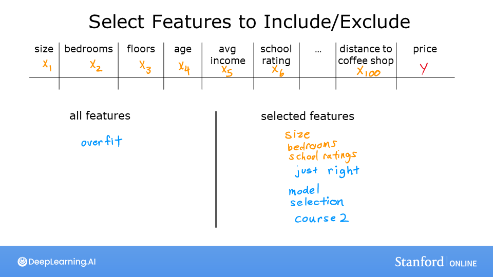
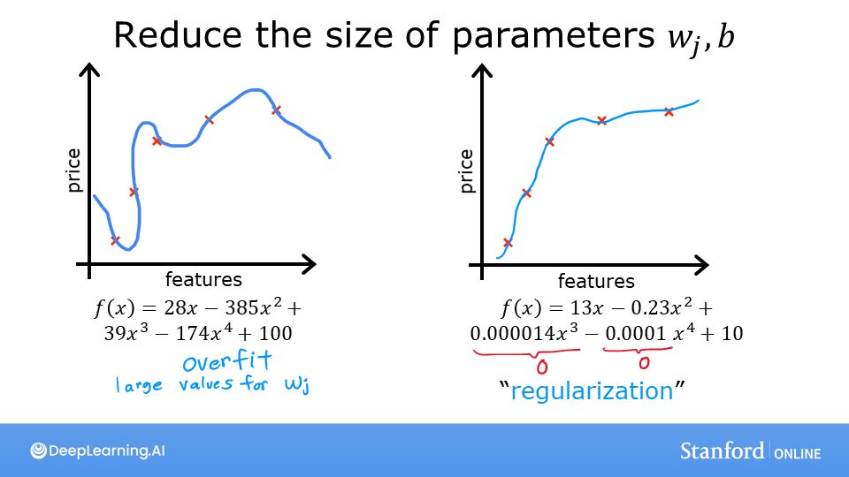

Overfitting & Regularization
Một mô hình thuộc lòng dữ liệu huấn luyện thì không học được gì. Regularization là cách “phạt” sự phức tạp để mô hình tổng quát hoá tốt hơn.
Underfit, vừa khớp, overfit

- Underfitting (bias cao): mô hình quá đơn giản, không nắm được quy luật — sai nhiều ngay cả trên tập train. Như một học sinh có “định kiến” mạnh: dữ liệu nói gì cũng vẫn vẽ đường thẳng.
- Overfitting (variance cao): mô hình quá phức tạp, khớp cả nhiễu — J_train gần 0 nhưng dự đoán dữ liệu mới rất tệ. Chỉ cần đổi vài điểm dữ liệu là mô hình thay đổi hoàn toàn (variance cao).
- Vừa khớp (generalization): dự đoán tốt cả trên dữ liệu chưa từng thấy. Đây mới là mục tiêu thật sự.
Thử: đặt bậc d = 1 (underfit), d = 4 (vừa), d = 12 (overfit — đường cong uốn lượn để chạm từng điểm train). Giữ d = 12 rồi tăng λ: đường cong mượt lại và J_cv giảm.
Ba cách chống overfitting
- Thu thập thêm dữ liệu — cách hiệu quả nhất, nếu có thể.
- Dùng ít đặc trưng hơn (feature selection) — nhưng có thể bỏ mất thông tin hữu ích.
- Regularization — giữ mọi đặc trưng nhưng giảm độ lớn của các trọng số \(w_j\), để không đặc trưng nào chi phối quá mức.



Hàm chi phí có regularization
Thêm vào hàm chi phí một số hạng phạt tổng bình phương các trọng số:
Với logistic regression, thay phần đầu bằng log loss, phần regularization giữ nguyên.
- \(\lambda = 0\): không regularization → có thể overfit.
- \(\lambda\) rất lớn: mọi \(w_j \approx 0\), \(f \approx b\) → đường ngang, underfit.
- Thường không regularize \(b\) — trong thực tế khác biệt không đáng kể.
def compute_cost_reg(X, y, w, b, lambda_=1):
m, n = X.shape
cost_without_reg = compute_cost(X, y, w, b) # log loss như chương 6
reg_cost = (lambda_ / (2 * m)) * np.sum(w ** 2)
return cost_without_reg + reg_costGradient descent có regularization
def compute_gradient_reg(X, y, w, b, lambda_=1):
m, n = X.shape
dj_db, dj_dw = compute_gradient(X, y, w, b)
dj_dw += (lambda_ / m) * w # chỉ thêm cho w, không cho b
return dj_db, dj_dwViết lại bước cập nhật:
$$ w_j := w_j\left(1 - \alpha\frac{\lambda}{m}\right) - \alpha\frac{1}{m}\sum_i (f - y)x_j^{(i)} $$Hệ số \(1 - \alpha\lambda/m\) hơi nhỏ hơn 1 (ví dụ 0.9998). Mỗi vòng lặp, trọng số bị “co lại” một chút trước khi cập nhật bình thường — nên regularization L2 còn được gọi là weight decay.
Dữ liệu kiểm tra vi mạch không tách được bằng đường thẳng. Ánh xạ hai đặc trưng thành 27 đặc trưng đa thức tới bậc 6 (map_feature), rồi huấn luyện logistic regression với \(\lambda = 0.01\): ranh giới quyết định là một đường cong khép kín bao quanh lớp dương, độ chính xác train khoảng 83%. Thử \(\lambda = 0\) (overfit, ranh giới méo mó) và \(\lambda = 100\) (underfit, ranh giới gần tròn và lệch) để thấy tác dụng.
| Tên | Số hạng phạt | Đặc điểm |
|---|---|---|
| L2 / Ridge | \(\lambda\sum w_j^2\) | Co mọi trọng số về gần 0, mượt |
| L1 / Lasso | \(\lambda\sum |w_j|\) | Đẩy nhiều trọng số về đúng 0 → tự chọn đặc trưng (sparse) |
| Elastic Net | kết hợp L1 + L2 | Cân bằng hai ưu điểm |
Trong deep learning còn có: dropout (ngẫu nhiên tắt nơ-ron khi huấn luyện), early stopping (dừng khi J_cv bắt đầu tăng), data augmentation (xoay, lật, cắt ảnh để có thêm dữ liệu), và batch normalization.
Trong scikit-learn: Ridge(alpha=λ), Lasso(alpha=λ); với LogisticRegression, tham số C = 1/λ (C nhỏ = regularization mạnh). Trong Keras: kernel_regularizer=regularizers.l2(0.1) (chương 11).
- C1_W3_Lab08 — Overfitting (công cụ tương tác chọn bậc đa thức & λ)
- C1_W3_Lab09 — Regularized Cost and Gradient
- C1_W3 Practice Lab — phần 3: Regularized Logistic Regression
Ghi nhớ
- Underfit = bias cao (sai cả train); overfit = variance cao (đúng train, sai dữ liệu mới).
- Regularization L2: thêm \(\frac{\lambda}{2m}\sum w_j^2\) vào J và \(\frac{\lambda}{m}w_j\) vào gradient.
- λ là siêu tham số: quá nhỏ → overfit, quá lớn → underfit. Chọn bằng tập cross-validation (chương 11).
Tự kiểm tra
J_train = 0.001, J_cv = 2.5. Mô hình đang gặp vấn đề gì? Nên làm gì?
Overfit (variance cao). Thêm dữ liệu, giảm số đặc trưng, hoặc tăng λ.
Tại sao phải scale đặc trưng trước khi regularize?
Vì phạt \(w_j^2\) như nhau cho mọi \(j\). Nếu một đặc trưng có thang đo lớn, trọng số của nó tự nhiên nhỏ và gần như không bị phạt; đặc trưng thang nhỏ lại bị phạt nặng. Scale giúp phạt công bằng.